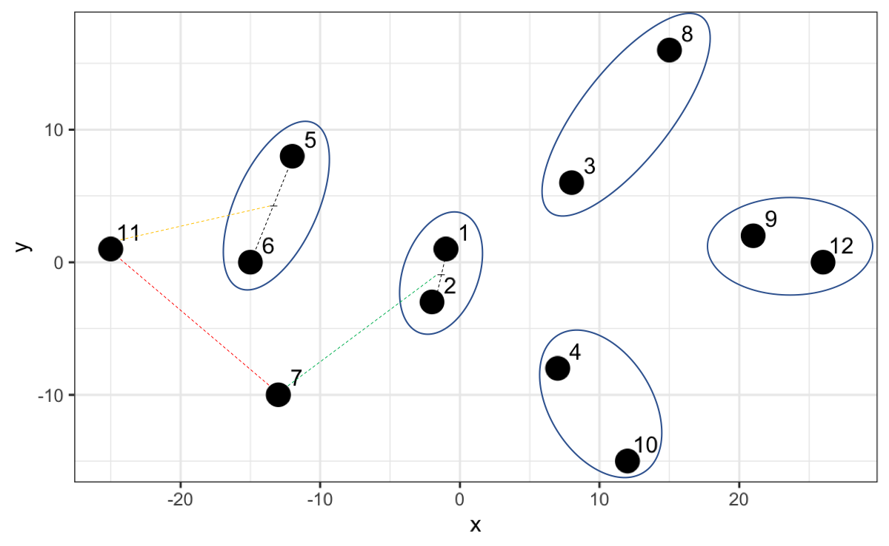

Chapter 12 Unsupervised Learning
Now that we know how to create supervised learning algorithms, understanding unsupervised learning becomes an intuitive exercise.
While in supervised learning we have a set of variables that we use to predict a certain output class (up/down, resign/not resign), in unsupervised learning we do not have expected output classes. In supervised learning we had training data and testing data that allowed us to validate the effectiveness of the model by its closeness to the known class. In unsupervised learning we do not have a default output. This in turn generates a great challenge because it is very difficult to know if we have already finished the work or if we can still generate another model with which we feel more satisfied.
The simplest example to understand this type of learning is when we have our customer base and we want to segment them for the first time. In that case, we look for customers who behave in the same way, but being the first time, we don’t know how many segments we can have. The challenge lies in determining the cut-off: how many segments do we seek to create?
12.1 Learning Objectives
By the end of this section, you will be able to:
By the end of this section, you will be able to clearly differentiate between supervised and unsupervised learning, understanding the distinct challenges of working with unlabeled data. We will apply the k-means clustering algorithm to segment data into optimal groups and use hierarchical clustering to visualize relationships through dendrograms. Furthermore, you will learn to evaluate the quality of these clusters using the elbow and silhouette methods, and perform basic dimensionality reduction to simplify complex datasets.
12.2 Applications of Unsupervised Learning
The main applications of unsupervised learning are related to data clustering. Here, the goal is to find homogeneous subgroups within the data. These algorithms are based on the distance between observations. The customer segmentation example would be an example of clustering.
The most commonly used clustering algorithms are: k-means clustering and hierarchical clustering.
12.3 K-Means Clustering
To understand this method we will use examples first with a minimal amount of variables and then little by little we will create a more generic model.
12.3.1 Clustering with k = 2
Suppose we have a list of players on a soccer field and we take a photo from above to have their coordinates (variable 1 would be the x-axis and variable 2 would be the y-axis). We cannot see which team each player belongs to so we will paint everyone as black dots.
players <- tibble(x = c(-1, -2, 8, 7, -12, -15, -13, 15, 21, 12, -25, 26),
y = c(1, -3, 6, -8, 8, 0, -10, 16, 2, -15, 1, 0)
)
players |>
ggplot() +
aes(x, y) +
geom_point(size = 5)
This method allows us to group based on the definition of centroids. We will define as many centroids as groups we want to obtain. Since for this case we know that there must be two teams, we will use 2 centroids (k = 2).
The k-means algorithm then places these 2 points (centroids) randomly on the plane in a first iteration. Then, it calculates the distance between each center and the other data points. If it is closer to a centroid then it assigns it to centroid 1, otherwise to centroid 2.

A first grouping has already been performed. Now each centroid within each group is located at the mean of the other points in its group and another iteration occurs to reassign all points. This iteration is done over and over again until the centroids are fixed.
To create this model in R we will use the function kmeans(data, centers = k).
kmeans_model <- kmeans(players, centers = 2)
# We print the coordinates of the centers
kmeans_model$centers
#> x y
#> 1 -11.33333 -0.5000000
#> 2 14.83333 0.1666667This means that for these two centers the average distance to the other points is the minimum, therefore the algorithm assigns them to one group or another. Let’s see approximately where these centers are located if we marked them with an x.

Thus, once the model is created we can obtain the clustering results, team 1 or team 2.
We can add this team assignment as one more column of our players data set to be able to visualize them in R.
# We add the cluster column
players_grouped <- players |>
mutate(cluster = team)
# We visualize the players according to the grouping
players_grouped |>
ggplot() +
aes(x, y, fill = factor(cluster)) +
geom_point(size = 5, pch = 21) +
scale_fill_manual(values=c("#EE220D", "#01A2FF")) +
theme(legend.position = "none")

We have found two centroids until minimizing the sum of the squared differences between each centroid and the other points in the cluster. We can access and see how much this value is, given that it is part of the model results.
# Sum of squares within each cluster
kmeans_model$withinss
#> [1] 570.8333 863.6667
# Total
kmeans_model$tot.withinss
#> [1] 1434.5Tot.withinss comes from Total within-cluster sum of squares.
12.3.2 Clustering with k >= 3
When we have 3 or more centers the idea is the same, we only change the centers parameter.
kmeans_model <- kmeans(players, centers = 3)
team <- kmeans_model$cluster
players_grouped <- players |>
mutate(cluster = team)
players_grouped |>
ggplot() +
aes(x, y, color = factor(cluster)) +
geom_point(size = 5) +
theme(legend.position = "none")
kmeans_model$tot.withinss
#> [1] 881.25
In this case we have found that the sum of squares within the clusters is smaller, so we could indicate that this grouping is more optimal than the grouping into two groups. However, the sum of squares is not necessarily the best indicator for choosing how many clusters to create.
12.3.3 Determination of Optimal Clusters
We can mainly use two methods to determine how many clusters we should build, k. The sum of squares method (wss) and the average silhouette method (silhouette).
To avoid having to calculate models for different values of k we will use the factoextra library, which was created especially to perform easy multivariate data analysis and elegant visualization, very useful for clustering.
12.3.3.1 Sum of Squares Method
To find the optimal “k” under this method, we will use the elbow plot, where we first calculate the total within-cluster sum of squares for different values of “k”. Then, visually we will identify a point where there seems to be a very strong drop followed by a more gradual drop in the slope. To do this, we will use the function fviz_nbclust(data, type, method) and enter our data, the type of algorithm that will be used to group and the measurement method.

In this case the “elbow” is found at the value k = 2, from there the sum of squares reduces but at a slower rate.
12.3.3.2 Average Silhouette Method
The method described above is a visual aid that makes recognition difficult when the data points are closer. Therefore, it is much more frequent to perform a silhouette analysis (Rousseeuw 1987). This approach measures the quality of a clustering. That is, it determines how well each object lies within its group. A high average silhouette width indicates a good clustering. The average silhouette method calculates the average silhouette of observations for different values of “k”. The optimal number of groups “k” is the one that maximizes the average silhouette over a range of possible values for “k”.
To do this, we change the method parameter in the function and obtain the silhouette analysis.

Here it is clearly seen that for a value of k=2 we have the best average, making this our optimal number of groups.
[!TIP] Interpreting Silhouette Scores Interpreting these scores is straightforward: a score close to 1 indicates that the data point is well-matched to its own cluster and distinct from neighbors, representing a strong grouping. A score near 0 suggests the point lies on the boundary between clusters, while a negative score implies the point may have been assigned to the wrong group. Generally, an average silhouette width above 0.5 signals a solid clustering structure.
12.3.4 k-means for more than 2 variables
The method we have learned can be easily extended to more variables. Only in this case it would no longer be possible to visualize it like the soccer team and we would only visualize the results of the grouping and the learned metrics.
To do this, we will use the following customer dataset, where we will find a dataset of customers of a wholesale distributor. It includes the annual spending in monetary units on various product categories.
url <- "http://archive.ics.uci.edu/ml/machine-learning-databases/00292/Wholesale%20customers%20data.csv"
customers <- read_csv(url)
#> Rows: 440 Columns: 8
#> ── Column specification ─────────────────────────────
#> Delimiter: ","
#> dbl (8): Channel, Region, Fresh, Milk, Grocery, Frozen, Detergents_Paper, De...
#>
#> ℹ Use `spec()` to retrieve the full column specification for this data.
#> ℹ Specify the column types or set `show_col_types = FALSE` to quiet this message.We are going to perform a grouping only considering the spending made on frozen foods, groceries and dairy products.
customers_filtered <- customers |>
select(Milk, Grocery, Frozen)
# We scale the data to ensure equal weight for all variables
customers_scaled <- as.data.frame(scale(customers_filtered))Once we have our data we would create a silhouette analysis to determine the best value of “k”.

Again, we get that the recommended number of clusters is 2. Let’s create the model for k = 2 and store the resulting cluster.
model <- kmeans(customers_scaled, centers = 2)
customers_grouped <- customers_filtered |>
mutate(cluster = model$cluster)
customers_grouped
#> # A tibble: 440 × 4
#> Milk Grocery Frozen cluster
#> <dbl> <dbl> <dbl> <int>
#> 1 9656 7561 214 1
#> 2 9810 9568 1762 1
#> 3 8808 7684 2405 1
#> 4 1196 4221 6404 1
#> 5 5410 7198 3915 1
#> 6 8259 5126 666 1
#> 7 3199 6975 480 1
#> 8 4956 9426 1669 1
#> 9 3648 6192 425 1
#> 10 11093 18881 1159 1
#> # ℹ 430 more rowsOnce we have grouped our data we can calculate the amount of data in each cluster and the mean of the values for each group and thus identify differences between these two potential customer segments.
customers_grouped |>
group_by(cluster) |>
summarise(total = n(),
mean_Milk = mean(Milk),
mean_Grocery = mean(Grocery),
mean_Frozen = mean(Frozen))
#> # A tibble: 2 × 5
#> cluster total mean_Milk mean_Grocery mean_Frozen
#> <int> <int> <dbl> <dbl> <dbl>
#> 1 1 395 4056. 5628. 2864.
#> 2 2 45 21070. 28341. 4898.Thus, we have learned to segment customers using machine learning.
12.4 Hierarchical Clustering
Hierarchical clustering is another method for grouping data. The word hierarchical comes from the hierarchies that this algorithm creates to determine the clusters. Unlike k-means, we do not start by indicating how many clusters we want to create, but rather the algorithm shows us a list of possible combinations according to the hierarchy of distances between points. Let’s see it with an example.
12.4.1 Clustering with two variables
To do this we will use the same soccer team example that we used previously. With the difference that this time we number each player to make visualization easier.
num <- 1:12
players <- tibble(x = c(-1, -2, 8, 7, -12, -15, -13, 15, 21, 12, -25, 26),
y = c(1, -3, 6, -8, 8, 0, -10, 16, 2, -15, 1, 0))
players |>
ggplot() +
aes(x, y, label = num) +
geom_point(size = 5) +
geom_text(nudge_x = 1.3, nudge_y = 1.3)
This algorithm searches for the two points with the shortest distance, the closest ones, and groups them. Then it searches for another two points with the smallest distance and asks: is the distance between these two new points less than the distance of these points to the previously created group? If the answer is yes, it groups them, otherwise it groups the closest point to the first created group.
Let’s understand the algorithm graphically. Points 1 and 2 have the lowest hierarchy since they have the shortest distance. Then the algorithm searches for the next two closest points (point 9 and 12) and when comparing with the midpoint of 1 and 2 it opts to create a new group with a slightly higher hierarchy and so on.

However, now that we have point 7 and 11 and we calculate the distance, it turns out that that distance is not the smallest compared to the distances with the other existing groups. For example, 7 is closer to the midpoint of 1 and 2, and 11 is closer to the midpoint of 5 and 6.

Thus, the algorithm creates a higher hierarchy for this grouping.

The algorithm continues until it finally creates a group that includes everyone as the highest hierarchy. In the following graph we can not only appreciate this but also on the y-axis the distance between each point or group of points.

Up to here we haven’t done more than generate hierarchies from the distances which will serve us later to determine how many clusters to generate. Let’s create in R what has been advanced so far. The first thing we will do is calculate the distances between all points. To do this we will use the dist() function.
With the calculated distances we can create the hierarchical model using the hclust(distance_matrix) function.
Once our model is created we can visualize it using the dendextend library.
The visualization we saw is called a dendrogram. To do this we just have to convert our model to dendrogram format.

So far we have only seen the hierarchy, but what interests us is the grouping. The grouping is done by the calculated distance (h parameter). Let’s try with a distance of 60. We will use the color_branches and color_labels functions to make the changes visible.
cut_height <- 60
dend_model |>
color_branches(h = cut_height, col = c("red", "green", "blue", "orange")) |>
color_labels(h = cut_height, col = c("red", "green", "blue", "orange")) |>
plot()
#> Warning in get_col(col, k): Length of color vector was longer than the number
#> of clusters - first k elements are used
Since the highest hierarchy distance is approximately 50, then in this case it groups everyone into one large cluster. Let’s try with a lower number, for example 40.
cut_height <- 40
dend_model |>
color_branches(h = cut_height, col = c("red", "green", "blue")) |>
color_labels(h = cut_height, col = c("red", "green", "blue")) |>
plot() |>
abline(h = cut_height, lty = 2)
#> Warning in get_col(col, k): Length of color vector was longer than the number
#> of clusters - first k elements are used
By making a cut at 40 we now have two clusters, in this case the red color and the green color. Let’s try with a lower number, 28.
cut_height <- 28
dend_model |>
color_branches(h = cut_height) |>
color_labels(h = cut_height) |>
plot() |>
abline(h = cut_height, lty = 2)
#> Loading required namespace: colorspace
Now we have three clusters and so we could continue until obtaining the clusters we need.
We must have noticed how impractical it is to use the distances of the hierarchical model because they vary according to the data we have. This model allows us to make cuts not only by distances but also by indicating how many clusters we want, parameter k.
desired_clusters <- 3
dend_model |>
color_branches(k = desired_clusters) |>
color_labels(k = desired_clusters) |>
plot()
We see that it gives us the same grouping whether we use distances or number of desired clusters.
12.4.2 Determination of Optimal Clusters
To calculate how many clusters are optimal to create we will use the silhouette analysis again, but this time with the argument FUN = hcut to determine that it be evaluated based on a hierarchical model.

It is not surprising that the value of k is also 2, which coincides with the number obtained in the k-means model.
12.4.3 Obtain the grouping
Now that we have validated that the recommended number of clusters is 2, we calculate the grouping from the previously created model.
players_grouped <- players |>
mutate(cluster = cutree(hierarchical_model, k = 2)
)
players_grouped
#> # A tibble: 12 × 3
#> x y cluster
#> <dbl> <dbl> <int>
#> 1 -1 1 1
#> 2 -2 -3 1
#> 3 8 6 2
#> 4 7 -8 2
#> 5 -12 8 1
#> 6 -15 0 1
#> 7 -13 -10 1
#> 8 15 16 2
#> 9 21 2 2
#> 10 12 -15 2
#> 11 -25 1 1
#> 12 26 0 2Finally, let’s visualize the grouping performed with this method.
players_grouped |>
ggplot() +
aes(x, y, color = factor(cluster)) +
geom_point(size = 5) +
theme(legend.position = "none")
We see that the grouping is the same as with the previous method, basically because we are talking about two variables and two clusters.
Both methods learned are very flexible, so the creation of models for more variables follows the same logic learned in these sections.
12.5 Dimensionality Reduction
We have created clusters with a controlled number of variables. However, we are going to encounter in many cases many more variables that make interpretation difficult and it is important to identify if two variables have the same behavior to be able to take only one of them.
For this case we are going to take as an example a credit card customer dataset, adaptation of the public dataset in Kaggle, from the following route.
url <- "https://dparedesi.github.io/Data-Science-with-R-book/data/credit-cards.csv"
cards_df <- read_csv(url)We have more than 8 thousand customers with 13 attributes. We will analyze if there are strongly correlated variables. To do this we will use the corrplot library.
Next, we will enter the dataset to visualize correlations between the variables,
There is a strong correlation between the total purchases variable and the purchases made in the first 3 months. We can visualize these two variables to validate.
cards_df |>
ggplot() +
aes(x=purchases, y=purchases_first_3_months) +
geom_point() +
labs(title="Customer Attributes",
subtitle="Relationship between total purchases and first 3 months")Given this, we could include within our analysis only one of these two variables.
We could also validate the distribution of these variables.
# We remove the purchases first 3 months variable
cards_df <- cards_df[, !names(cards_df) == "purchases_first_3_months"]
cards_df |>
pivot_longer(cols = everything(), names_to = "attributes", values_to = "values") |>
ggplot() +
aes(x=values, fill=attributes) +
geom_histogram(colour="black", show.legend=FALSE) +
facet_wrap(~attributes, scales="free_x") +
labs(x="Values", y="Frequency",
title="Customer Attributes - Histogram")We see data concentrations in some variables such as tenure (time our customer has been with us). We can validate it by zooming into that variable.
85% of our data are from customers who have been with us for 12 months. We could choose to filter the data to analyze customers who have 1 year and thus remove this variable from the grouping.
cards_df <- cards_df |>
filter(tenure == 12)
cards_df <- cards_df[, !names(cards_df) == "tenure"]
# We will do the same with the balance_freq variable
prop.table(table(cards_df$balance_freq))
cards_df <- cards_df |>
filter(balance_freq == 1)
cards_df <- cards_df[, !names(cards_df) == "balance_freq"]If we also analyze the distributions of each variable we find the following:
We see that there are variables that have maximums of 1, as there are others that have a maximum of 30 thousand or 50 thousand. We had already seen previously the importance of normalizing data. Here we will also do it with the scale() function.
We can verify that the distribution does not change, only the scale.
cards_df_norm |>
pivot_longer(cols = everything(), names_to = "attributes", values_to = "values") |>
ggplot() +
aes(x=values, fill=attributes) +
geom_histogram(colour="black", show.legend=FALSE) +
facet_wrap(~attributes, scales="free_x") +
labs(x="Values", y="Frequency",
title="Customer Attributes - Histogram")Data preparation and variable reduction is a necessary step when we create machine learning models. However, we must do it carefully, given that in this exercise when preparing the data, although we have fewer variables (10), we also have fewer rows.
More advanced techniques such as Principal Component Analysis (PCA) and Singular Value Decomposition (SVD) are used to perform dimensionality reduction more rigorously so as not to lose so much data in our analysis. These techniques are widely used in practice and well-documented, though they require a solid understanding of linear algebra for proper interpretation.
12.6 Exercises
In the following exercises we will work on post data from 10 fashion companies that have their pages on Facebook and the reactions of their followers. To do this, we will work with the data in the following repository:
url <- "http://archive.ics.uci.edu/ml/machine-learning-databases/00488/Live.csv"
posts <- read_csv(url)
# We remove columns not relevant to the analysis
irrelevant_columns <- c("status_type","status_id", "status_published", "Column1",
"Column2", "Column3", "Column4")
data_posts <- posts[, !names(posts) %in% irrelevant_columns]- With the
data_postsobject normalized (usescale()function) and create thedata_posts_normobject. Build a silhouette plot to determine how many cluster groups are recommended using the k-means algorithm.
Solution
- With the
data_postsobject build a silhouette plot to determine how many cluster groups are recommended using the hierarchical algorithm.
- If you had to remove a variable from the analysis, which variable would it be?
Solution
- Remove the
num_reactionsvariable from thedata_posts_normobject and thedata_postsobject and perform a silhouette analysis again usingdata_posts_norm. Does the number of clusters change?
Solution
The number of clusters does not change because there exists another variable with the same behavior as this one.- Create the k-means model to group using the recommended number of clusters found. Use the
data_posts_normobject for the creation of the model. Create thedata_posts_groupedobject where the original data ofdata_postsis with the additional columncluster_kmeansindicating the cluster result of this model.
Solution
- Create the hierarchical model to group using the recommended number of clusters found. Use the
data_posts_normobject for the creation of the model. Add to thedata_posts_groupedobject the columncluster_hierto store the result of the grouping.
Solution
- Calculate the average of each value of the variables for each group of the k-means model.
Solution
- Calculate the average of each value of the variables for each group of the hierarchical model.